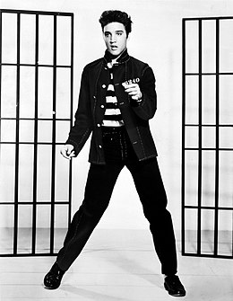
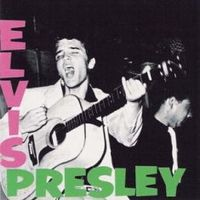
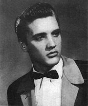

Э́лвис Аро́н Пре́сли (англ. Elvis Aaron Presley[7]; 8 января 1935, Тьюпело — 16 августа 1977, Мемфис) — американский певец и актёр, один из самых коммерчески успешных исполнителей популярной музыки XX века[8]. Также известен как «король рок-н-ролла» (или просто «король» — The King).
  Пресли популяризовал рок-н-ролл, хотя и не был первым исполнителем в этом жанре. Он соединил стили кантри и блюз, дав рождение новому стилю музыки — рокабилли[8], к которому относятся его первые записи на Sun Records в середине 1950-х годов. Вкрапляя в свой стиль элементы госпел и эстрады, Пресли вышел за рамки рокабилли и достиг мировой популярности (хиты «Heartbreak Hotel», «Don't Be Cruel», «Hound Dog» и другие). В 1956 году дебютировал в кино («Люби меня нежно»). В 1958—1960 годах проходил службу в ВС США; после возвращения из армии вновь стал записываться («It’s Now or Never», «Are You Lonesome Tonight?» и др. хиты), после чего сконцентрировался на кинокарьере, снявшись в общей сложности в 31 фильме и записав два десятка саундтреков, большая часть которых оценивается крайне слабо.
Переломным в карьере Пресли стал его первый телеконцерт (1968), обозначивший отход от устаревшего стиля музыкальных кинолент и вернувший страсть к выступлениям. Записи конца 1960-х — 1970-х годов отмечены влиянием кантри, соул и эстрады (хиты «In the Ghetto», «Suspicious Minds», «Always on My Mind» и др.). Элвис возвращается к концертной деятельности, которая становится доминирующей чертой его последующей карьеры (ежегодные ангажементы в Лас-Вегасе, гастроли по США). В 1973 году при помощи спутниковой связи проходит международная трансляция концерта «Aloha from Hawaii». Злоупотребление медикаментами привело к усилению депрессии и ухудшению здоровья, что стало причиной смерти Пресли в 1977 году.
Творчество Пресли неизменно продолжает пользоваться спросом; в целом, в мире продано более 1 млрд экземпляров пластинок (включая новейшие издания с ранее не издававшимися записями)[9]. Пресли — лауреат трёх премий «Грэмми» (1968, 1973, 1975), один из первых музыкантов, включённых в «Зал славы рок-н-ролла» (1986).